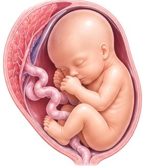

Login do Acompanhamento Fetal MK — necessário para salvar exames na pasta da paciente.
Divergência no GPA
O GPA deste laudo é diferente do que já está salvo no Acompanhamento Fetal MK para esta gestação. Escolha qual manter.
No Acompanhamento Fetal MKG0 P0 A0
Neste laudoG0 P0 A0
Clique no card com o GPA que deve valer.

Ultrassom Morfológico de 2º Trimestre
Dra. Morgana Kummer · avaliação morfológica fetal órgão a órgão, biometria estendida e cordão umbilical
Identificação do médico (assinatura do laudo)
Salvo ✓
Personalizar frases do laudo
Estas são as frases usadas automaticamente conforme o que você marca no formulário. Edite o texto do jeito que preferir — a próxima vez que você abrir a ferramenta (neste mesmo navegador), seu texto continua aqui.
Ao exame — apresentação, placenta, cordão, líquido amniótico
Avaliação morfológica fetal — texto padrão de cada segmento
Impressões diagnósticas — base
Impressões diagnósticas — Doppler e colo
Rodapé
Salvo ✓
Dados do exame
Paciente e exame
Gestação
Datação
semanasdias
Tipo de gestação
Ao exame — útero, placenta e colo
Placenta
mm
Miométrio
Colo uterino
mm
Discordância de peso
Calculada a partir dos pesos fetais estimados acima: (maior − menor) ÷ maior. A partir de 20% entra o alerta de acompanhamento especializado.
Resultado
Doppler
Artérias uterinas
Impressões diagnósticas
Marcadas automaticamente conforme os achados acima e os blocos ativados. Desmarque ou ajuste conforme necessário — o texto final é editável diretamente no laudo ao lado.
0 campos pendentes1 página
⚠ Ainda há campos não preenchidos — corrija antes de imprimir.